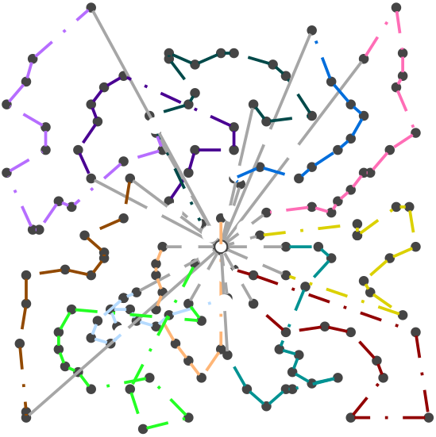
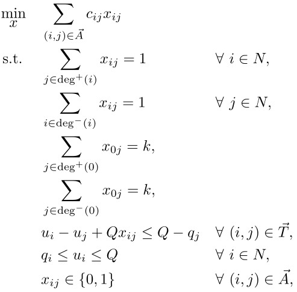
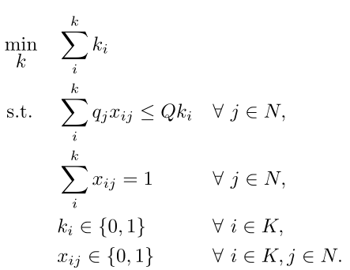

On Statistical Learning of Branch and Bound for Vehicle Routing Optimization 
Table of Contents
This repository contains the code for reproducing the experiments performed in the "On Statistical Learning of Branch and Bound for Vehicle Routing Optimization" research paper.
1. Vehicle Routing Problem
The violet lines represent integer but not feasible solutions, once a feasible solution has been found, the paths are distinguished by colors. The light blue lines fumbling around represent the LP-relaxed problem.


1.1. Integer Program

2. Bin Packing Problem
Although BPP classifiers can be used/trained independently, the original motive for this research was to provide a means to calculating the minimum number of required vehicles for solving a VRP instance. The blue boxes, filling the right side of the bin, analogously, represent the LP-relaxed problem (which are cruising out of the bins since they have less constraints :).

Figure 1: Distributing 80 weighted items across 48 bins using GraphSAGE
2.1. Integer Program

3. Installation
Cloning the repository:
git clone git@github.com:isotlaboratory/ml4vrp.git
Then our fork of École:
git clone git@github.com:ndrwnaguib/ecole.git
And eventually, SCIP, which is the underlying mathematical solver where we replace the branching strategies with trained classifiers, from here. Once the precomplied version have been extracted, install école using:
cd [PATH]/[TO]/ecole CMAKE_ARGS="-DSCIP_DIR=[PATH]/[TO]/scipoptsuite/src/build/scip -DCMAKE_INSTALL_RPATH_USE_LINK_PATH=ON" python -m pip install .
Moreover, the following packages are necessary for the sampling, training, and evaluation steps:
export SCIPOPTDIR=[PATH]/[TO]/scipoptsuite/usr python -m pip install pyscipopt # python -m pip install pytorch-lightning python -m pip install fairscale python -m pip install randomname
3.1. Optimization Problems Instances
The instances used in our experiments for BPP are already included in the repository given their light size. However, to download the VRP instances, please run the ./instances/vrp/download.sh bash script.
4. Usage Instructions
4.1. Sampling
To sample B&B decisions when solving a VRP instance, please use the following command:
python sample.py --problem "VRP" --instance [VRP_FILE_FORMAT_FILE_PATH] --num-train-samples [DECISION SAMPLES SIZE]
For example, to sample a dataset of 1000 decision samples for the A-n32-k5 instance, the command is:
python sample.py --problem "VRP" --instance datasets/vrp/A/A-n32-k5.vrp --num-train-samples 1000
The same command can be used with to do the sample B&B decisions for the BPP; however, along with changing the input instance accordingly.
4.1.1. Research sampled datasets
The datasets we sampled and used to train our models are larger in size, we are going to share them as soon as we find a suitable dataset repository.
4.2. Training
python train.py --samples-path samples/A-n32-k5 --gpus 1 --cpus 6 --name [EXP_NAME] --model-name GCNN --log-dir logs --epochs 1
4.3. Evaluation
The trained models can be evaluated using:
python evaluate.py --checkpoint weights/vrp/GraphSAGE/A-32-k5_GraphSAGE --arch GraphSAGE --results-path . --time-limit 60 --dataset datasets/vrp/A/M-n151-k12.vrp --problem CVRP
Additionally, there is a --live for both problems which plots the
process of solving both the relaxed problem and printing the feasible solutions.
A small warning when using that option for BPP; the plotting uses multi-threading, and spawns a number of threads equal to the number of available bins, while this may be improved, at the time, we were only evaluating simple problems where number of bins ranged from 30-60.
Also, one might notice that the transparent blue boxes sometimes, if not always, break free from the bin borders (in BPP), these are not coding glitches, in fact, they properly represent the relaxed problem, during which the constraints to the original problem (the boxes in other colors) are relaxed, i.e., allowed to be violated. The same concept applies to the background blue lines in the VRP visualization.
python evaluate.py --checkpoint weights/vrp/GraphSAGE/A-32-k5_GraphSAGE --arch GraphSAGE --results-path . --time-limit 60 --dataset datasets/vrp/A/M-n151-k12.vrp --problem CVRP --live
4.3.1. Pre-trained Models
The trained models weights are available under ./weights. For exmple, one can load the architecture weights when trained on as follows:
python evaluate.py --checkpoint weights/[PROBLEM]/A-n32-k5_GraphSAGE
where PROBLEM {CVRP, BPP}.